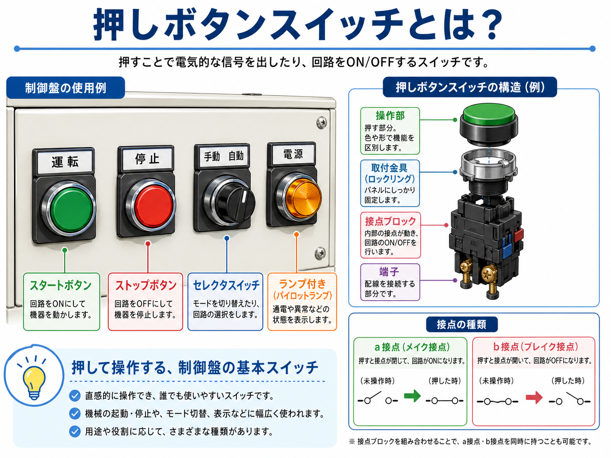
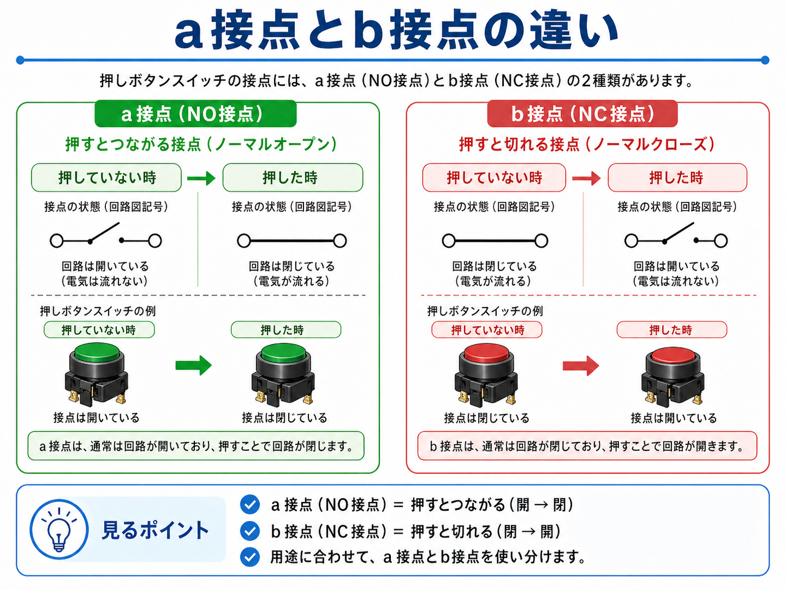
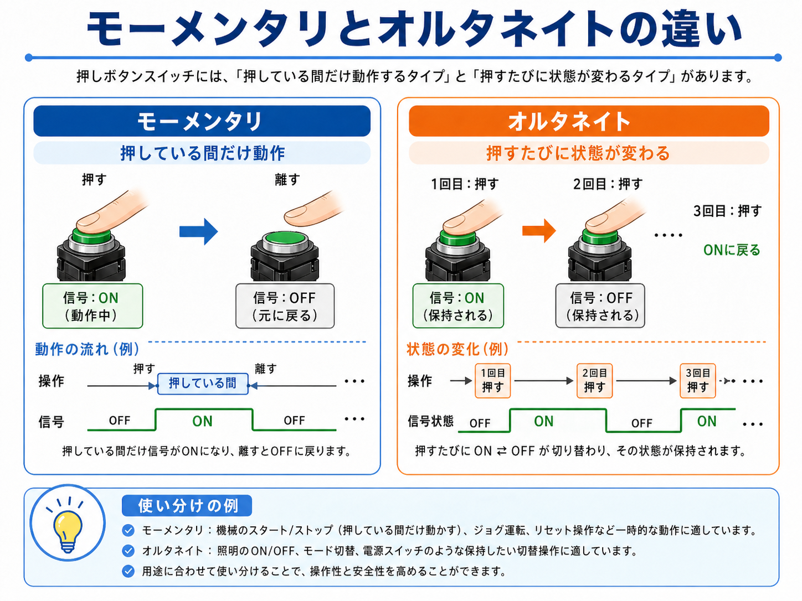

向いている人
- 制御盤の押しボタンの役割を知りたい人
- a接点・b接点の違いが混ざりやすい人
- 操作盤やハード回路を現場目線で追いたい人
押しボタンスイッチは、制御盤や操作盤で機械を起動・停止したり、信号を入れたりする基本の操作部品です。 a接点・b接点、モーメンタリ・オルタネイトの違いを、現場で見分けやすい形で整理します。
押しボタンスイッチは、制御盤や操作盤で人が押して使う基本のスイッチです。 機械のスタート、停止、リセット、確認、モード切替など、現場ではかなり多くの場面で使われます。
押しボタンを見るときに大事なのは、ボタンの色や文字だけで判断しないことです。 そのボタンがa接点なのかb接点なのか、押している間だけ動くのか、押すたびに保持されるのかを分けて見ると理解しやすくなります。
盤面で見えているのはボタン部分ですが、実際に回路をON/OFFしているのは裏側の接点ブロックです。 現場では、表のボタン名と裏側の接点構成をセットで確認します。

先輩押しボタンは、制御盤で人が直接操作する一番わかりやすい部品だね。

新人緑はスタート、赤は停止みたいなイメージはあります。でも裏側の接点まではあまり見ていませんでした。

先輩そこが大事。表の色と名前だけじゃなくて、a接点かb接点か、押した時にどう変わるかを見よう。
押しボタンスイッチとは、押すことで電気的な信号を出したり、回路をON/OFFしたりするスイッチです。 制御盤では、機械をスタートさせる、停止させる、異常をリセットする、操作を確認する、といった用途で使われます。
盤面に見えている丸いボタン部分だけでなく、裏側には接点ブロックや端子があります。 実際に回路を切り替えるのは、この裏側の接点です。

緑色で使われることが多く、機械の起動や運転開始の信号として使われます。
赤色で使われることが多く、停止や解除の信号として使われます。
ボタンの中にランプがあり、運転中・異常・通電などの状態表示も兼ねます。
手動/自動など、モードや回路の選択に使われます。押しボタンとは操作感が違います。
盤面に「運転」「停止」と書いてあっても、裏側の接点がa接点なのかb接点なのかで回路の動きは変わります。 図面と実物を照らし合わせて見ることが大切です。
押しボタンスイッチの接点には、よく使うものとしてa接点とb接点があります。 ざっくり言うと、a接点は「押すとつながる」、b接点は「押すと切れる」接点です。

| 接点 | 押していない時 | 押した時 | よくある使い方 |
|---|---|---|---|
| a接点 | 回路が開いている | 回路が閉じる | スタート、リセット、確認入力など |
| b接点 | 回路が閉じている | 回路が開く | 停止、インターロック、異常検出など |
最初は回路図記号だけで覚えようとすると混ざりやすいです。 まずは、a接点は押すとつながる、b接点は押すと切れる、と現場の動きで覚えると理解しやすくなります。
押しボタンには、押している間だけ動作するタイプと、押すたびに状態が変わって保持されるタイプがあります。 これがモーメンタリとオルタネイトの違いです。

| 種類 | 動き方 | 現場での見方 | 使い方の例 |
|---|---|---|---|
| モーメンタリ | 押している間だけON | 離すと元に戻る | スタート、ストップ、リセット、ジョグ操作 |
| オルタネイト | 押すたびにON/OFFが切り替わる | 状態が保持される | 照明、電源、モード切替、保持したい操作 |
起動停止回路や自己保持回路では、押しボタン自体で保持するのではなく、リレーやマグネット側の接点で保持することが多いです。 そのため、押している間だけ信号が入るモーメンタリを使う場面がよくあります。
制御盤や操作盤で押しボタンを見るときは、ボタンの色、銘板、接点構成、配線先を順番に確認します。 盤面だけで判断せず、図面や端子番号と合わせて見ると間違いにくくなります。
「運転」「停止」「リセット」「手動」「自動」など、何の操作をするボタンなのかを確認します。
緑は起動、赤は停止などの傾向があります。ただし色だけで決めつけないようにします。
a接点なのかb接点なのか、何個の接点ブロックが付いているのかを確認します。
PLC入力に入っているのか、リレー回路に入っているのかで確認方法が変わります。
操作盤の表側だけを見ると簡単そうに見えますが、裏側では複数の接点ブロックが組み合わさっていることがあります。 1つのボタンでa接点とb接点を同時に使っている場合もあります。
押しボタンスイッチまわりのトラブルでは、「押しても動かない」「停止できない」「ランプが点かない」「反応が不安定」といった症状が出ます。 そのときは、ボタン本体だけでなく、接点・端子・配線・入力先を分けて確認します。
押したときにa接点が閉じるか、b接点が開くかを確認します。
端子のゆるみや配線抜けがあると、押しても信号が入らないことがあります。
交換時にa接点とb接点を間違えると、回路の動きが逆になることがあります。
ランプ付きボタンでは、AC100V、AC200V、DC24Vなど電圧仕様の確認が必要です。
PLC入力やリレーコイル側まで信号が届いているかを順番に確認します。
ボタンの戻りが悪い、押し感が重い場合は、操作部や取付状態も確認します。

新人押しボタンって、壊れていたら交換すればいいだけだと思っていました。
先輩交換する前に、接点が切り替わっているか、端子に信号が来ているか、入力先まで届いているかを順番に見た方がいいね。
押しボタンスイッチは見た目が似ていても、接点構成、ボタン径、ランプ電圧、保持方式、取付穴サイズが違うことがあります。 交換するときは、色や形だけで判断せず、型式や仕様を確認します。
| 確認項目 | 見る理由 |
|---|---|
| 接点構成 | a接点のみ、b接点のみ、1a1bなど、必要な接点数が違います。 |
| 動作方式 | モーメンタリなのか、オルタネイトなのかで操作後の状態が変わります。 |
| ランプ電圧 | ランプ付きボタンでは、使用電圧が合っていないと点灯しない、または故障につながります。 |
| 取付穴サイズ | φ22、φ25、φ30など、盤面の穴径に合うものを選ぶ必要があります。 |
| 色と銘板 | 操作ミスを防ぐため、用途に合った色や表示にすることが大事です。 |
停止ボタンや非常停止、安全に関わる操作部は、設備の安全性に関わります。 接点構成や動作方式を変更すると危険な場合があるため、図面・仕様・安全要求を確認してから対応します。
押しボタンスイッチは、制御盤や操作盤で人が操作して信号を出す基本部品です。 緑のスタート、赤のストップ、ランプ付きボタン、セレクタスイッチなど、現場ではさまざまな形で使われます。
a接点は押すとつながる接点、b接点は押すと切れる接点です。 モーメンタリは押している間だけ動作し、オルタネイトは押すたびに状態が切り替わって保持されます。
現場で見るときは、ボタンの色や銘板だけでなく、裏側の接点ブロック、端子、配線先まで合わせて確認すると、回路の動きが追いやすくなります。